3. 블록선도와 총괄전달함수
블록선도란 선형 공정변수들 사이의 관계를 블록으로 나타낸, PFD같은 그림이다. 이때 블록은 전달함수를 의미하며 입력변수에 전달함수를 곱하고, 그것들을 더하면 출력변수가 얻어진다.
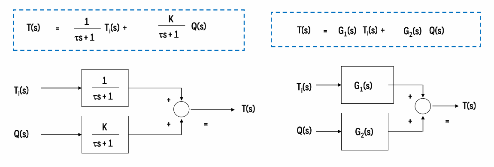
블록선도의 표기법과 의미를 위 그림을 보면서 이해해보자.
이때 가끔 복잡한 공정선도는 다음처럼 그려진다.
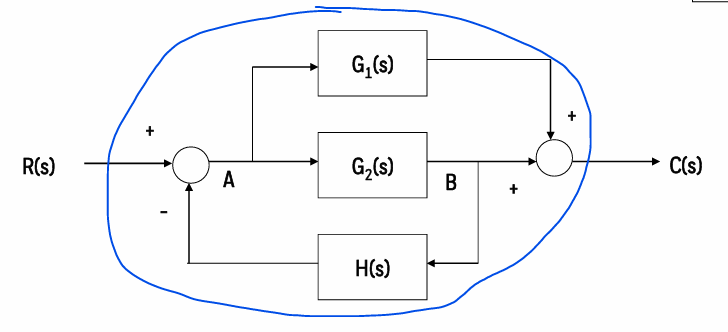
이들을 묶어 하나로 표현한 것을 총괄전달함수라고 부르며 밑 그림처럼 나타내진다.
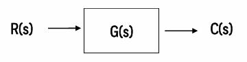 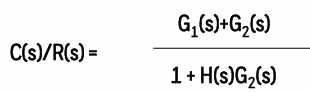
그런데 이것을 어떻게 구할 수 있을까? 이에는 요령이 필요하다. 그 요령을 학습해보자.
1)결과값에 도달하는 경로와 그 사이에 있는 루프를 찾는다.
2)경로를 모두 더하고, 1+루프합으로 나눈다
다음 예시로 알아보자.

1)결과값에 도달하는 경로와 그 사이에 있는 루프를 찾는다.
일단 R(S)에서 C(S)로 가는 경로는 2개가 존재한다.
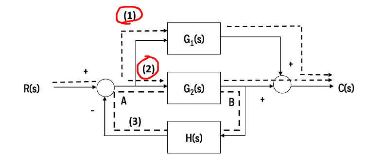
사이에 루프는 H(S)를 거치는 하나가 존재한다. 이 루프안에 있는 전달함수를 모두 곱한다.
2)경로를 모두 더하고, 1+루프들의 합으로 나눈다
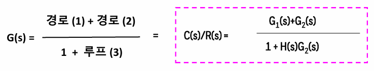
이렇게 구할 수 있다.
이제 설명은 끝났다. 예제를 풀어보며 마무리하자.
예제1)
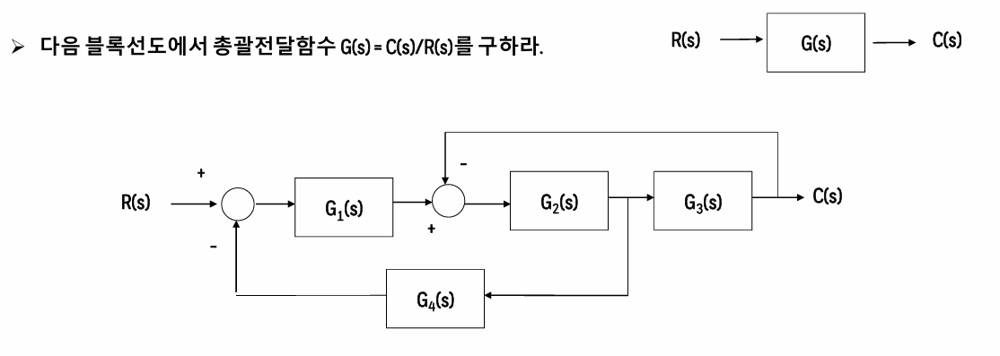
예제 1 풀이)
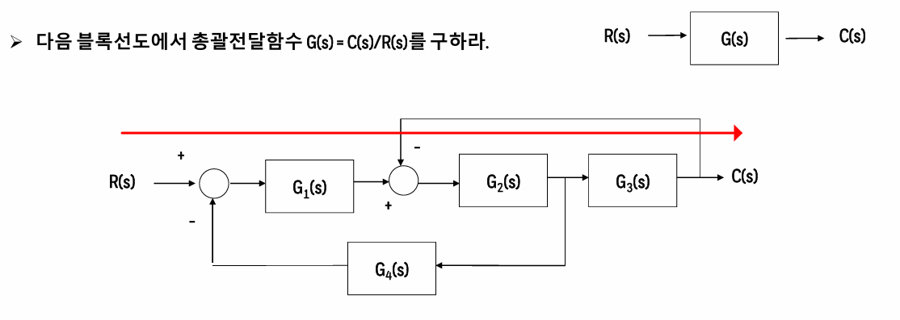
먼저 경로는 하나만 존재한다.
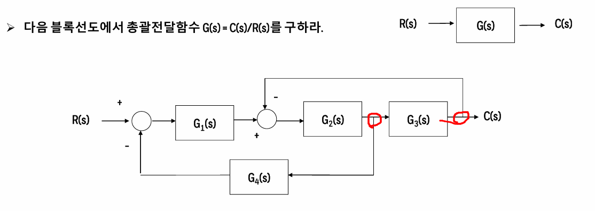
루프는 두개가 존재한다.
먼저 경로의 경우 G1(S)*G2(S)*G3(S)이고 1 루프(아래)는 G1(S)*G2(S)*G4(S) , 2루프(위)는 G2(S)*G3(S)이다. 중간에 루프로 유입되는 건 고려하지 않고, 루프 자체 내부에 있는 함수만 곱한다.
따라서 정답은
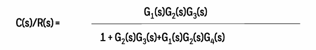
그런데 여기서 말하지 않은 주의점이 존재한다.
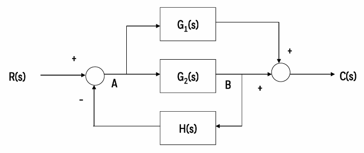
여기에 보면 동그라미 쳐진 곳에 +,-부호가 있는데, 이것이 존재하면 총괄전달함수의 부호에 영향을 준다.
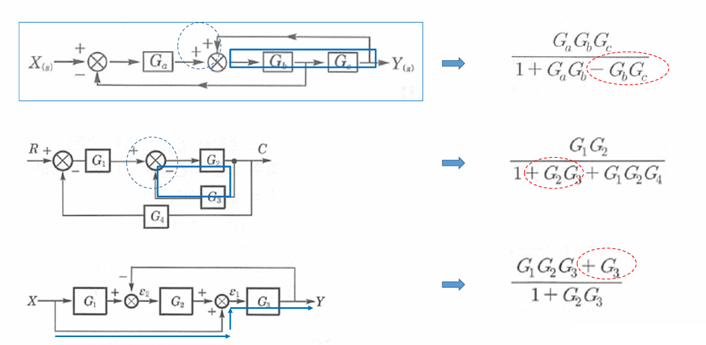
단순하게, ++-를 기억하면 된다. +가 2개 있다면 총괄식에는 -가 붙으며, +-가 있다면 총괄식에는 +로 들어간다.